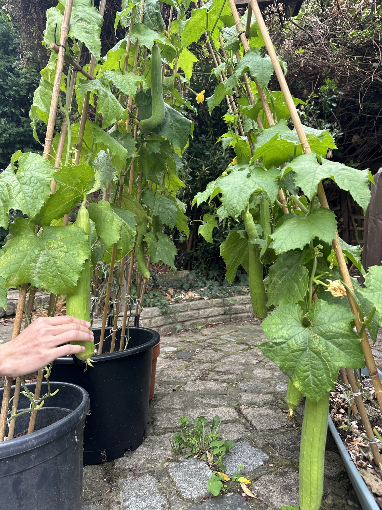
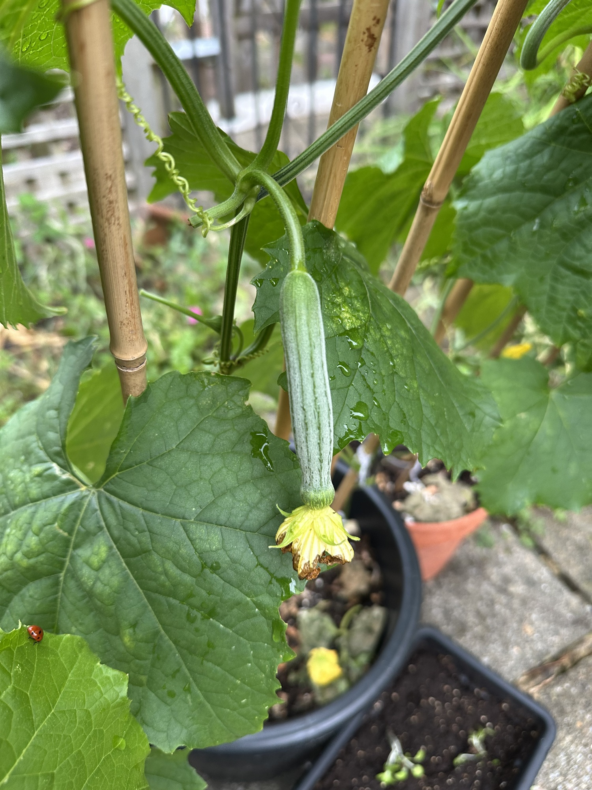
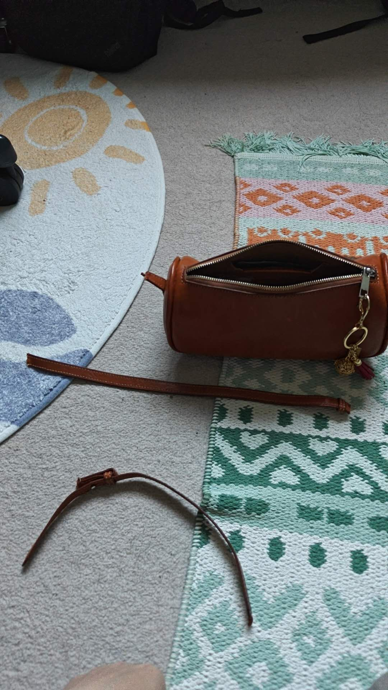
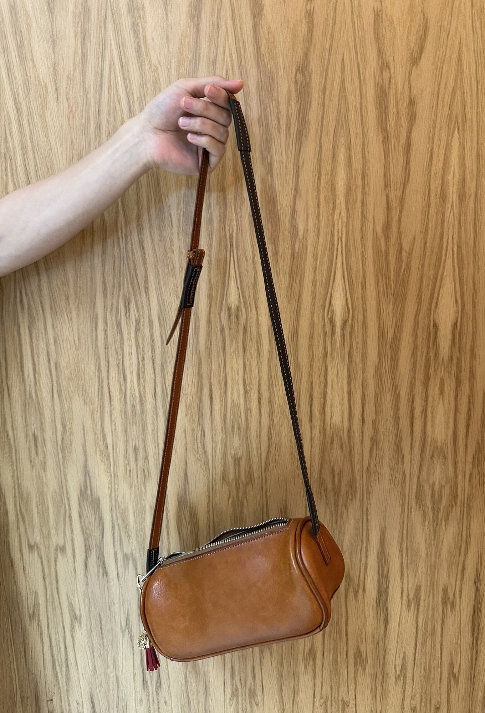

Living Practice
Living Practice
Design entangled with matter, season, and the unexpected — the garden and the workbench.
upload →images/luffa-1.jpg
upload →images/luffa-2.jpg

upload →images/luffa-3.jpg

Living Practice
From seed to sponge
Gardening · Biomaterial · Composting
From a single seed in a London backyard to a fibrous, biodegradable sponge — a full cycle of growing my own material. A study in regenerative design where care is the method, not waste the afterthought.
GardeningBiomaterialRegenerative
View details →
upload →images/leather-1.jpg

upload →images/leather-2.jpg

Living Practice
A Fox, a Bag, and a Repair
Leatherwork · Repair · More-than-human
A hand-stitched leather bag, a fox that took it in the night, and a repair that became the most interesting seam. An inquiry into how non-human actors reshape the objects we make.
LeatherworkRepairMore-than-human
View details →